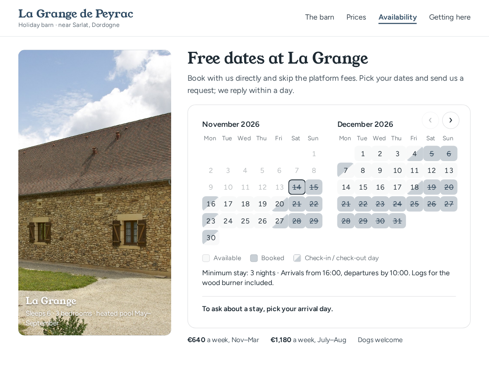

Availability Calendar
Show booked and free dates, synced from Airbnb
- Click a date in the dashboard to mark it booked
- Premium: sync Airbnb, Vrbo, Booking.com by iCal
- Pro: mark requests booked, keep a guest register
- Pro: one booking blocks every channel at once

What it does
Availability Calendar shows which dates are free and which are taken, on your site. For holiday cottages, rental flats, guest rooms and wedding venues.
Mark booked dates in the app's dashboard: click a date to take it, click again to free it, or shift-click a whole stay. Your site changes at once. Check-in and check-out days show as half days, so a changeover Saturday works for arriving.
Premium reads the calendar export links (iCal) of Airbnb, Vrbo or Booking.com every two hours, so their bookings appear without typing them in. It only reads, never changes them. Premium also gives you an export link those sites can import.
Visitors see free and taken days, never guest names. With Premium they can request dates with their name, email and a message; it arrives in the dashboard and in your contacts.
Pro turns requests into bookings: mark one as booked with the guest's name, and download the register as a CSV. Give the same property on every channel one group name, and a booking blocks all those channels at once. Pro also checks up to 20 iCal links every 20 minutes and names any link that fails.
The free plan shows one calendar, this month and next, with a small credit link.
Price
Free
- One calendar
- This month and next
- Mark booked dates in the dashboard
- Small credit link
Premium
$6/month, $5/month yearly (17% off). Hidden pre-made plan "Premium" (vendorId premium) stays hidden
- Airbnb, Vrbo and Booking.com sync
- Several calendars, 12 months ahead
- Date request form and iCal export
- Remove the credit link
Pro
$9/month, $7.20/month billed yearly (20% off). Pro implies Premium
- Everything in Premium
- Bookings register and CSV export
- One booking blocks every channel
- 20 sources, refreshed every 20 min